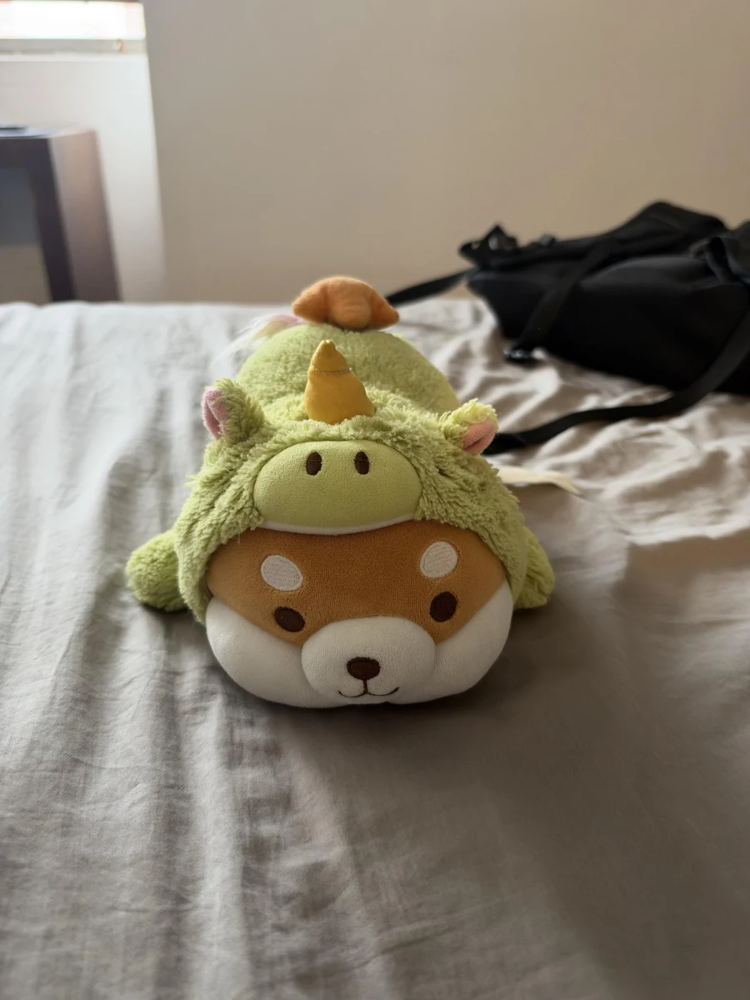
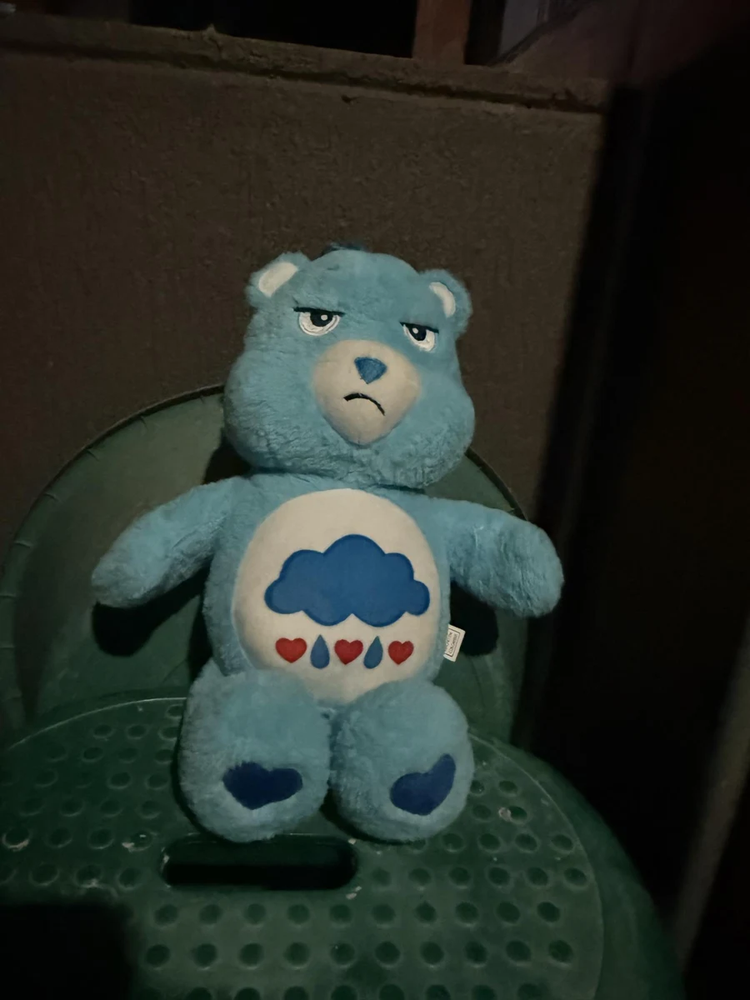
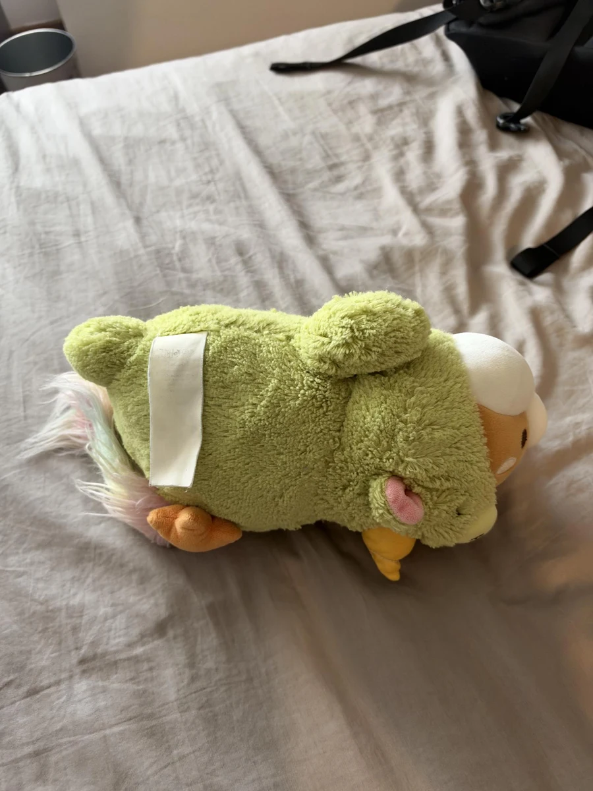
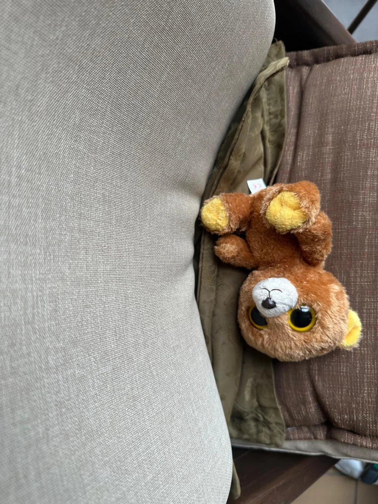
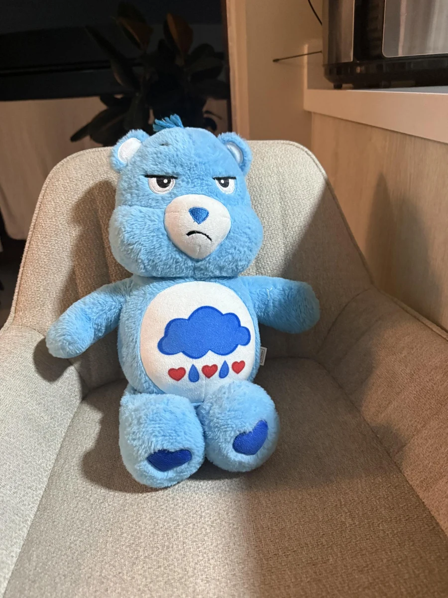
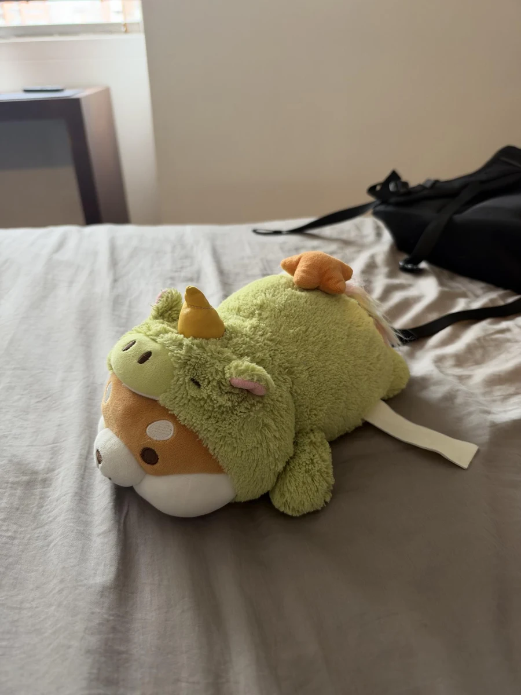
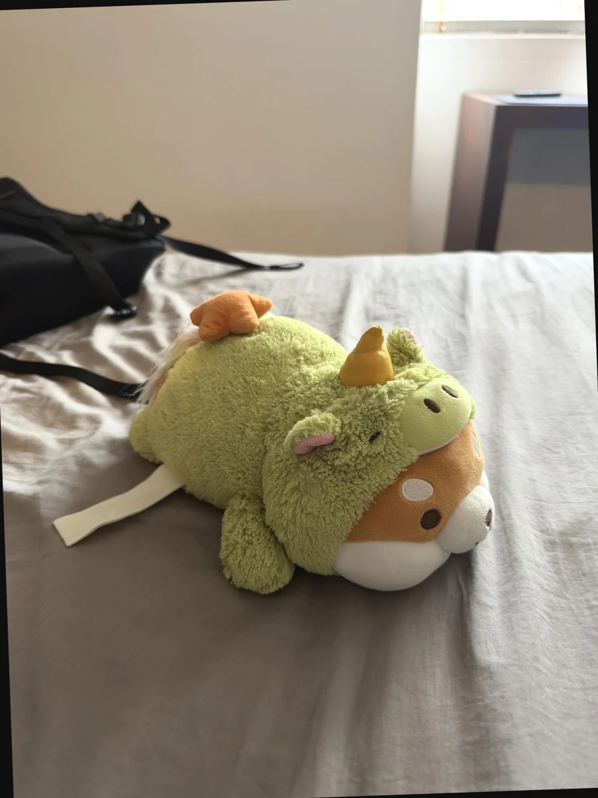
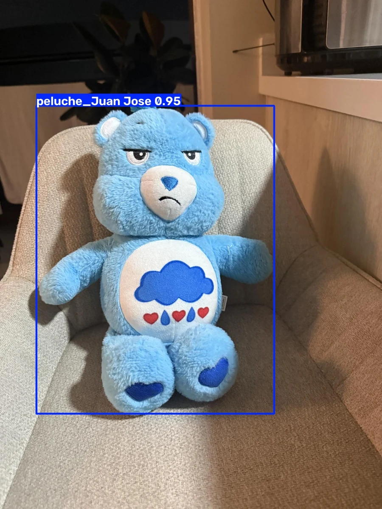
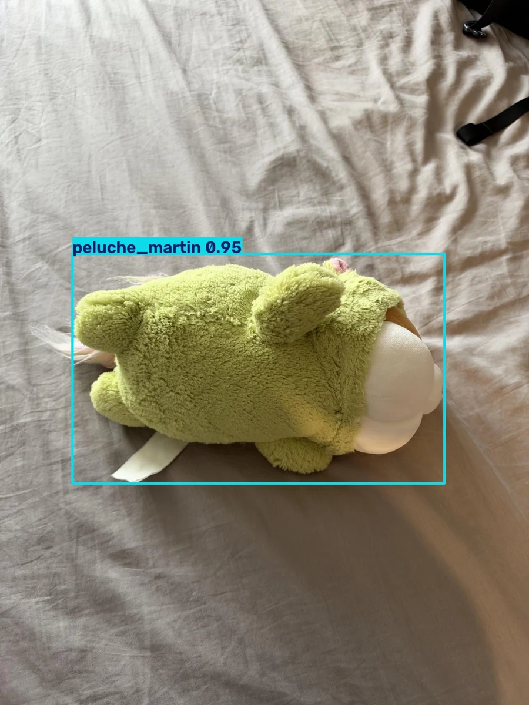
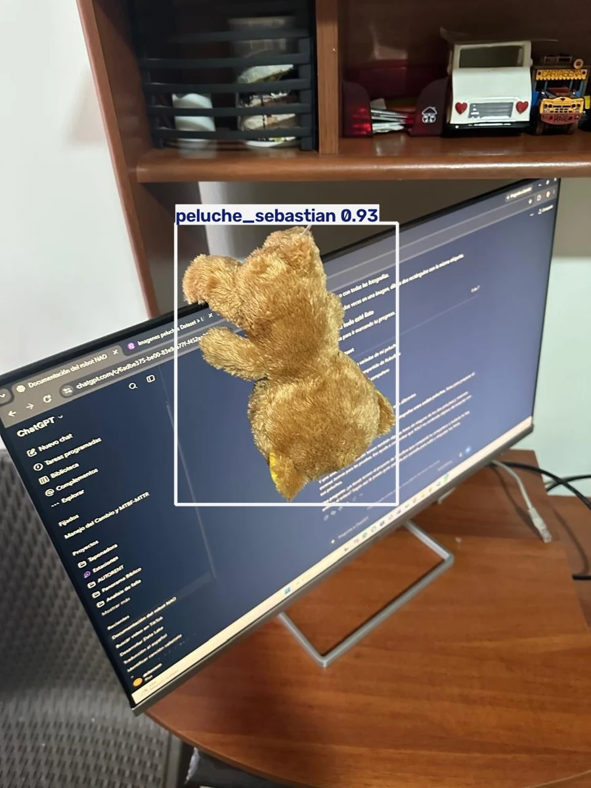

NAO quiere
reconocer a sus
amigos.
Entrenamos un modelo con fotografías propias para que NAO pueda reconocer a sus tres amigos.
YOLO26 nano · reconocimiento de sus amigos
Datos → entrenamiento → evaluación → cámara

Los tres amigos de NAO
Cada amigo es una clase. El detector aprende a localizarlo y asignarle su nombre.

peluche_Juan Jose
peluche_martin
peluche_sebastianNAO quiere reconocer a estos tres amigos específicos. Otros peluches pueden servir como distractores.
Las fotografías se convierten en datos

- 1
Fotografías propias
Distintos ángulos, posiciones, distancias y lugares.
- 2
Etiquetas en Roboflow
Una caja ajustada y la clase de cada peluche objetivo.
- 3
Ejemplos negativos
Escenas sin los objetivos, con archivos de etiquetas vacíos.
- 4
Exportación YOLO26
Imágenes, etiquetas y un YAML para entrenar en el notebook.
Primero dividir,
después aumentar
fotografías originales
| Grupo | Originales | Export final |
|---|---|---|
| Train ×2 | 226 | 452 |
| Validación | 65 | 65 |
| Test | 32 | 32 |
| Total | 323 | 549 |
Solo crece train. Validación y test conservan sus imágenes originales.
Aumentos moderados, solo en train


×2 dos imágenes en total por original de train
- Volteo horizontal
- 50 %
- Rotación
- −10° a +10°
- Brillo
- −15 % a +15 %
- Exposición
- −10 % a +10 %
- Desenfoque
- hasta 1.5 px
Auto-Orient se aplica como preprocesamiento. Los aumentos no sustituyen fotografías nuevas.
Aprender, elegir y medir
Los tres grupos cumplen trabajos distintos.
Train
Actualiza los pesos del modelo.
452 imágenesValidación
Guía la selección de best.pt y la parada anticipada.
65 imágenesTest
Evalúa el modelo final con imágenes reservadas.
32 imágenesValidar y probar no continúa el aprendizaje.
El mejor nano se obtuvo
en la época 45
YOLO26 nano preentrenado
- Máximo de épocas
- 50
- Resolución
- 640 px
- Lote
- 4 imágenes
- Paciencia
- 10 épocas
- Semilla
- 42
Mejor época de validación
best.pt conserva el mejor resultado, aunque el entrenamiento continúe.
Aprendizaje y estabilización
mAP50-95 de validación
Cuanto más alto, mejor
Error de las cajas
Cuanto más bajo, mejor
El error baja en ambos grupos. Al final, las mejoras son pequeñas.
No aparece un aumento sostenido del error de validación. Eso no demuestra por sí solo ausencia de sobreajuste.
Reconocer el objeto
y ajustar su caja
mAP50
Acepta una superposición de al menos 0.50 entre la caja predicha y la etiqueta.
99.5 %en test para los tres tamañosmAP50-95
Promedia resultados con exigencias de superposición desde 0.50 hasta 0.95.
89.5 %en test para nanoLa métrica más estricta permite distinguir el ajuste de las cajas.
mAP no es el porcentaje de fotos acertadas. También depende de clasificación, precisión y recall.
Nano fue el mejor
en estas pruebas
Mismo dataset y configuración. Comparación con conf = 0.25.
+4.2puntos frente a small en test
+6.1puntos frente a medium en test
Mayor tamaño no produjo mejores resultados en estas ejecuciones.
| mAP | Nano | Small | Medium |
|---|---|---|---|
| 50-95 · validación | 90.3 % | 87.7 % | 86.1 % |
| 50-95 · test | 89.5 % | 85.3 % | 83.4 % |
| 50 · test | 99.5 % | 99.5 % | 99.5 % |
Los experimentos también
cambiaron los datos
220 originales → 374 imágenes
308 train · 44 validación · 22 test
Juan José tenía solo un ejemplo en test.
323 originales → 549 imágenes
452 train · 65 validación · 32 test
Mayor representación de los tres peluches.
0.707 de mAP50-95 en test
Frente a 0.895 del nano actual.
Cambió la división: no aísla el efecto de la aumentación.
La comparación directa de tamaños sí conserva el dataset actual y sus grupos.
El detector reconoce a los amigos de NAO
Cada detección devuelve una caja, una clase y una confianza.



Ejemplos estáticos del proyecto. La aplicación de cámara utiliza best.pt y conf = 0.25.
Qué aprendimos del proyecto
Nano fue suficiente
Small y medium no mejoraron sus resultados con este dataset y esta configuración.
Las cajas marcaron la diferencia
Los tres alcanzaron 99.5 % de mAP50. Nano destacó al exigir mayor superposición con las etiquetas.
La confianza implica un intercambio
Subir conf filtra detecciones falsas, pero también puede ocultar peluches reales.
La cámara orienta los siguientes pasos
Permite identificar qué distancias, posiciones o condiciones de luz necesitan más ejemplos.
Ahora comprobamos estos resultados con la cámara.
Ahora, probemos el detector
de los amigos de NAO
Presentemos a los tres amigos ante la cámara y comprobemos si el modelo los reconoce.
Cambia la distancia y la posición de cada peluche. Después retíralos para comprobar si aparecen falsas detecciones.
Presiona q en la ventana de cámara para terminar.
uv run python probar_camara.pyUsa el modelo nano ya entrenado.
Demostración del modelo con la cámara del computador.